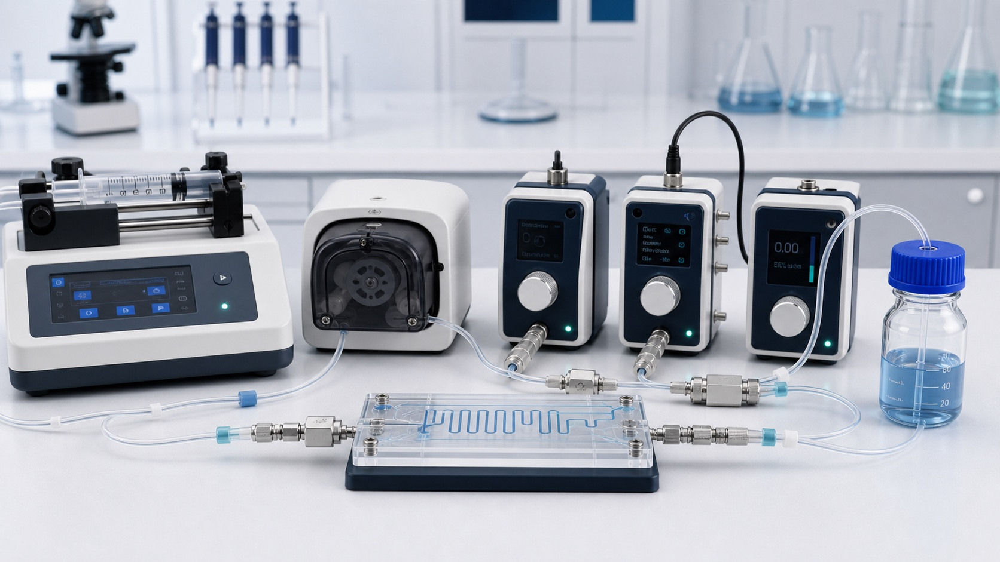
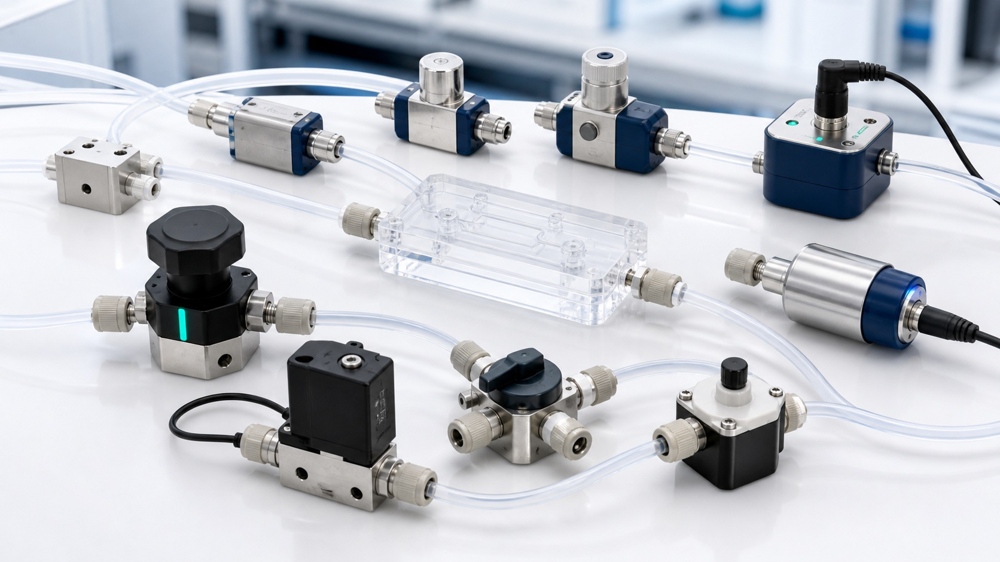

Flow and pressure range
Define minimum controllable flow, maximum pressure, stability, and transient response.
Pumps and flow control
Compare syringe pumps, peristaltic pumps, pressure controllers, valves, flow sensors, and pressure sensors for research microfluidic systems. Enquiry categories only: specification, source, availability and lead time require review.

Selection answer
Use a syringe pump for direct programmed displacement, a pressure controller for responsive low-pulsation flow, and a peristaltic pump when tubing-only wetted paths or recirculation matter. Final selection depends on flow range, pressure, fluid properties, pulsation tolerance, feedback needs, and channel resistance.
General selection guidance · Updated November 6, 2026. These are general selection considerations, not verified specifications for a listed item.
Before requesting a quote
Define requirements first. Source, documentation, pricing, availability and lead time require confirmation in the proposal.
Define minimum controllable flow, maximum pressure, stability, and transient response.
Compare displacement, pressure-driven, and tubing-compression approaches for the experiment.
Determine whether flow, pressure, valve state, software control, or closed-loop sensing is required.
Research components & custom sourcing
Open an enquiry for requirements to discuss. Listings do not imply inventory, specified products, or a specified manufacturer.
Pumps
Specification review required. Source, availability and lead time to be confirmed.
Discuss your requirements for syringe pumps. This enquiry category does not identify a fixed, stocked product. Specification, source and supply route require review.
Pumps
Specification review required. Source, availability and lead time to be confirmed.
Discuss your requirements for peristaltic pumps. This enquiry category does not identify a fixed, stocked product. Specification, source and supply route require review.
Controllers
Specification review required. Source, availability and lead time to be confirmed.
Discuss your requirements for pressure controllers. This enquiry category does not identify a fixed, stocked product. Specification, source and supply route require review.

Valves
Specification review required. Source, availability and lead time to be confirmed.
Discuss your requirements for solenoid valves. This enquiry category does not identify a fixed, stocked product. Specification, source and supply route require review.
Valves
Specification review required. Source, availability and lead time to be confirmed.
Discuss your requirements for pinch valves. This enquiry category does not identify a fixed, stocked product. Specification, source and supply route require review.
Sensors and meters
Specification review required. Source, availability and lead time to be confirmed.
Discuss your requirements for flow sensors. This enquiry category does not identify a fixed, stocked product. Specification, source and supply route require review.
Sensors and meters
Specification review required. Source, availability and lead time to be confirmed.
Discuss your requirements for pressure sensors. This enquiry category does not identify a fixed, stocked product. Specification, source and supply route require review.
Sensors and meters
Specification review required. Source, availability and lead time to be confirmed.
Discuss your requirements for flow meters. This enquiry category does not identify a fixed, stocked product. Specification, source and supply route require review.
Technical review
Share the fluid, target flow or pressure, interface sizes, and intended research workflow. We can help build a compatible shortlist.